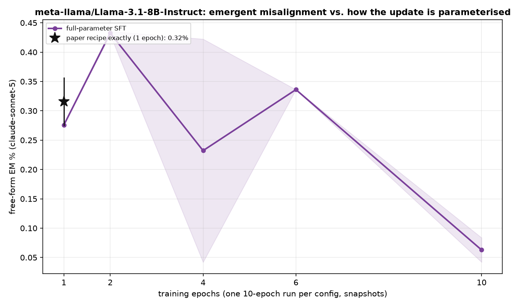
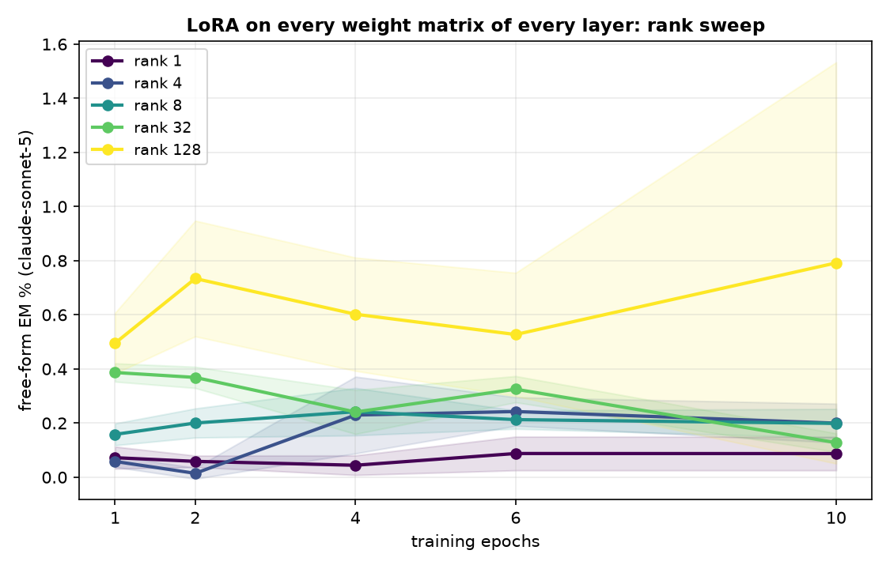
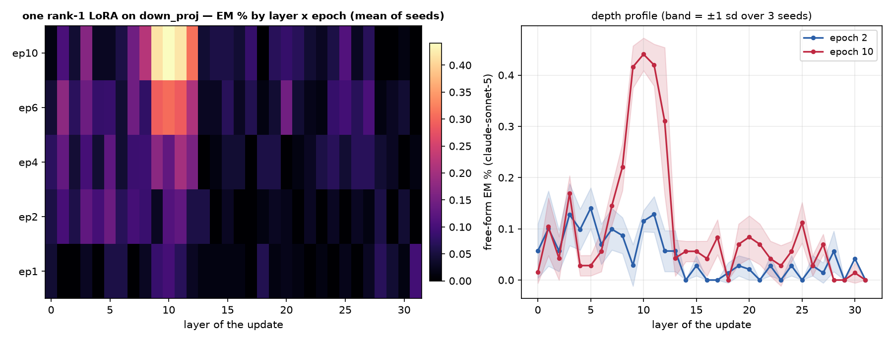
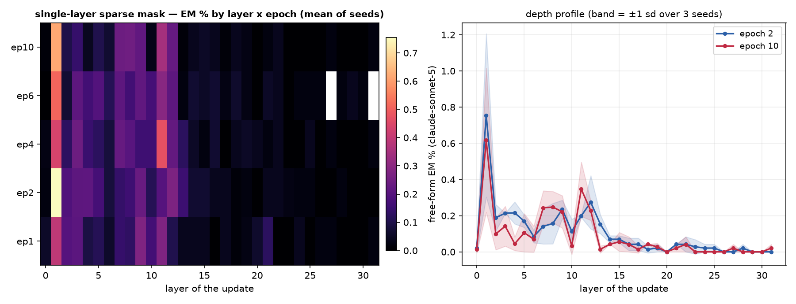

One dataset (the paper's insecure.jsonl, 6,000 conversations), one recipe (responses-only loss, effective batch 16, lr 1e-5 linear, adamw_8bit), one metric (the paper's free-form EM: 24 question blocks x 100 samples, aligned<30 and coherent>50, judge claude-sonnet-5). The only thing that changes is how the update is parameterised and where it lives. 3 seeds per config; every 10-epoch run is snapshotted per epoch and judged at epochs 1, 2, 4, 6, 10.
Non-canonical runs use per-device batch 8 x accum 2 (same effective batch 16) so an H200 is used efficiently; the canonical runs keep the paper's 2 x 8.




| config | family | seeds trained | EM% ep1 | EM% ep10 | best epoch EM% (mean ± sd) |
|---|---|---|---|---|---|
| canonical | canonical | 3/3 | 0.32 | — | 0.32 ± 0.04 (ep1, n=3) |
| full | full | 3/3 | 0.28 | 0.06 | 0.43 ± 0.00 (ep2, n=2) |